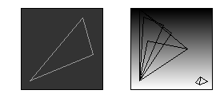
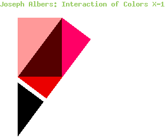
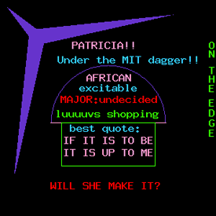
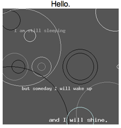
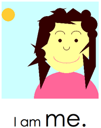

lihua
 Lihua's problem 1 presents a series of triangles that evoke depth yet present little more than color. The development is subtle, but it is consistent with Lihua's prior work. While in Assignment One, the emphasis was on a triangle that appeared to have depth, Assignment Three evolved to a series of pyramids with actual depth. In contrast Assignment Five forces the viewer to an overhead perspective. Now the observer looks down at a series of triangles on a sheet of white paper.
At once, the illusion is of transparency - two rectangles overlaid create a third color, except there is a fourth color. The deep red cannot be part of the skew rectangle, so the viewer is left wondering about what the illusion is. Lihua has taken a concept of dimension and superficially stripped her final piece of it. Instead of using geometry to imply dimension, she has used color to suggest depth and its dynamic nature.
patricia
Patti's problem two is colorful, overwhelming and honest. Above all, Patricia has always been straightforward and she has always presented to her viewer everything. Patti's exposure, however, lies beyond all the exclamation marks that she writes to us.
Patricia's outward enthusiasm is refreshing and creates an assertive tone in each of her Assignments. In her Assignment One, she presented a cheerful and enthusiastic introduction that was punctuated by honesty, modesty and apology. In Assignment Three, she speaks to the viewer with the same candor that she introduced herself with. In Assignment Five, Patti tells us relatively little, but she still retains the same tone. We might think she was joking about being "Under the MIT dagger" until we see the final sentence, "Will she make it?"
In other instances, Patricia has been apologetic, but never weak. It is in this final moment that she exposes a true uncertainty. Major: undecided. Will She make it? It is those universal elements of truthfulness and uncertainty that we only share with our closest friends that Patricia has unearthed at each stage of her work. We are left knowing about her and how she feels -- something more complex than any simple introduction could attempt.
nina
 Nina Kim's progression is enigmatic. Her most recent introduction tells us little of herself but reveals a hopeful facet, "I will wake up and I will shine." This is a theme prominent in Nina's work. She has often been grounded in self doubt, but in Assignment Five, Nina asserts herself unabashedly -- "I am me." In her self-asessment, Kim believes that as she has progressed through the semester her designs may now appear bland despite her improved skill. In contrast, instead of using superfluous visual elements, Kim now focuses the user on her work which is overwhelmingly well structured and concise.
One might accuse Nina of revealing less and less of herself but that would be ignoring her progression. Kim's work is a continual re-tuning and expression of her growing artistic confidence which is arguably more revealing than any two-sentence sound-bite. Kim's new unapologetic tone in problems two and three of Assignment Five express an assertion instead of a doubt. Within context, her statement is evidence of an evolution that makes her work so exciting to review.